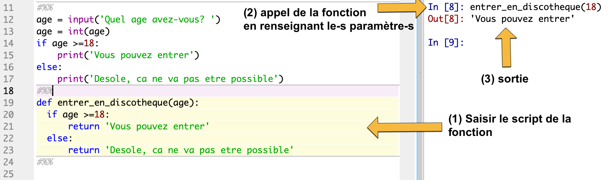

TP conditions
TP3: Structures conditionnelles
Editeur Python
Au choix, utilisez:
- un notebook.

Dans une même cellule: Saisir une ou plusieurs lignes de code Python, puis appuyer simultanement sur Majuscule(Shift) + Entrée pour executer le code.
- l’editeur Pyzo:
Mettre ## avant chaque script pour créer une cellule. Executer la cellule et passer à la suivante avec MAJ+CTRL+ENTREE.
- l’editeur Spyder:
Mettre #%% avant chaque script pour créer une cellule. Executer la cellule et passer à la suivante avec MAJ+ENTREE.

Exemple
Le programme suivant demande de renseigner votre age (à la premiere ligne), et vous laisse entrer en discothèque, seulement si vous avez plus de 18 ans:
Cette structure servira pour les prochains scripts.
Enoncé des exercices
Ex 1: test sur un nombre divisible
Le script suivant permet de tester la parité d’un nombre n. Saisir dans l’editeur Python le script suivant.
Tester puis adapter ce script, pour demander à l’utilisateur un entier, puis afficher si cet entier est divisible par 11.
- Question a: Recopier ce nouveau programme.
Ex 2: Comparer 2 nombres
Completer (et tester avec plusieurs valeurs de a et de b) le programme suivant qui compare a et b et retourne un message selon leur ordre ou leur egalité.
- Question b: Qui a la plus grande valeur parmi
aetbaprès leelse?
Ex 3: Comparer 3 nombres
version 1
Completer (et tester avec plusieurs valeurs de a de b et de c) le programme suivant qui compare a, b et c, et retourne un message précisant le plus grand des 3.
On suppose que les 3 nombres a, b et c ne sont jamais égaux. On utilisera l’opérateur and qui retourne True si les 2 conditions (à gauche et à droite de and) sont toutes les 2 évaluées à True, False sinon.
- Question c: Combien de
eliffaut-il utiliser au minimum?
version 2
Completer (et tester avec plusieurs valeurs de a de b et de c) le programme suivant (version 2) qui compare a et b et retourne un message selon leur ordre.
Cette fois, on n’utilisera pas l’opérateur and, ce qui oblige à utiliser 2 structures conditionnelles imbriquées.
- Question d: Traduire en langage naturel la double condition pour laquelle
aest le plus grand: si a est supérieur à b alors si … … … alors …
Ex 4: IMC
L’Indice de Masse Corporelle (IMC) est un indicateur chiffré utilisé en médecine. L’IMC d’une personne est donné par la formule:
$$IMC = \tfrac{masse}{taille^2}$$où la masse est en kilos et la taille en mètres.
Proposez un algorithme qui demande à l’utilisateur sa taille et sa masse puis qui affiche l’IMC de la personne.
Pensez à écrire un texte clair à destination de l’utilisateur pour qu’il sache quoi saisir.
Utilisez le tableau suivant pour fournir une information à la personne en fonction de son IMC:

classification de l'IMC - source: has-sante.fr
- Question e: Recopier la série d’instructions conditionnelles qui affichent une information sur l’IMC.
Utiliser des fonctions
Définition : Une fonction est un bloc de code auquel on donne un nom en vue de le reutiliser. L’appel de son nom exécute tout le bloc de code que cette fonction contient.
Voir le cours: Lien
Une fonction possède des paramètres, mis entre parenthèses et séparés chacun par une virgule. Une fonction retourne une valeur ou un objet, mis après le mot-clé return
Avec le programme en exemple:
- les entrées et variables sont mises en paramètre: il s’agit de
age - Les
printsont remplacés parreturn - Il faut choisir un nom à la fonction, écrit après
def
Lorsque vous executez le programme, … il ne se passe rien. Vous avez seulement chargé la fonction.
Il faut appeler la fonction pour que celle-ci soit executée, par exemple avec:
Voici un exemple d’execution d’une fonction à partir du shell.

1:charger la fonction (executer cellule), 2: appel, 3: sortie
Son execution cesse lorsqu’elle arrive à l’instruction return. Le programme reprend alors son cours.
- Question f: IMC à l’aide d’une fonction:
Créer une fonction que vous nommerez
IMCà partir de votre script de l’exercice 4. Testez la dans le shell de votre editeur.
Portfolio
- Rappeler comment s’écrit une structure conditionnelle avec alternative (if … elif … else). Placer les conditions, indentations, et les
: - Dans une structure conditionnelle avec alternative, tous les cas sont-ils toujours examinés par le programme? Expliquez.
- Expliquer la différence entre une variable (déclarée dans le main), et un paramètre (déclaré avec une fonction). Définir leur portée
- Dans une fonction, quel est le rôle du mot-clé
return? - Ecrire ou recopier les fonctions pour les scripts:
parite,est_divisible,compare_2_nombres,IMC. - Compléter le tableau suivant avec le nom et les paramètres que vous avez choisis pour les fonctions précédentes.
| nom de la fonction | paramètre-s | valeur de retour |
|---|---|---|
entrer_en_discotheque |
age |
‘vous entrez’ si age>=18, ‘desole’ sinon |
parite |
N |
|
| … |